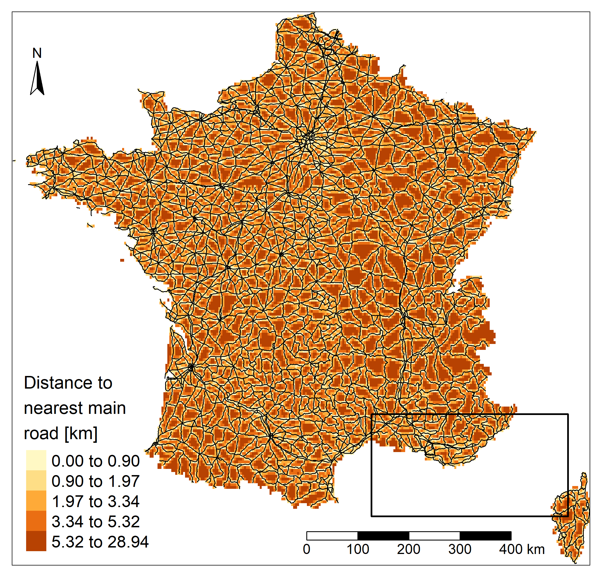
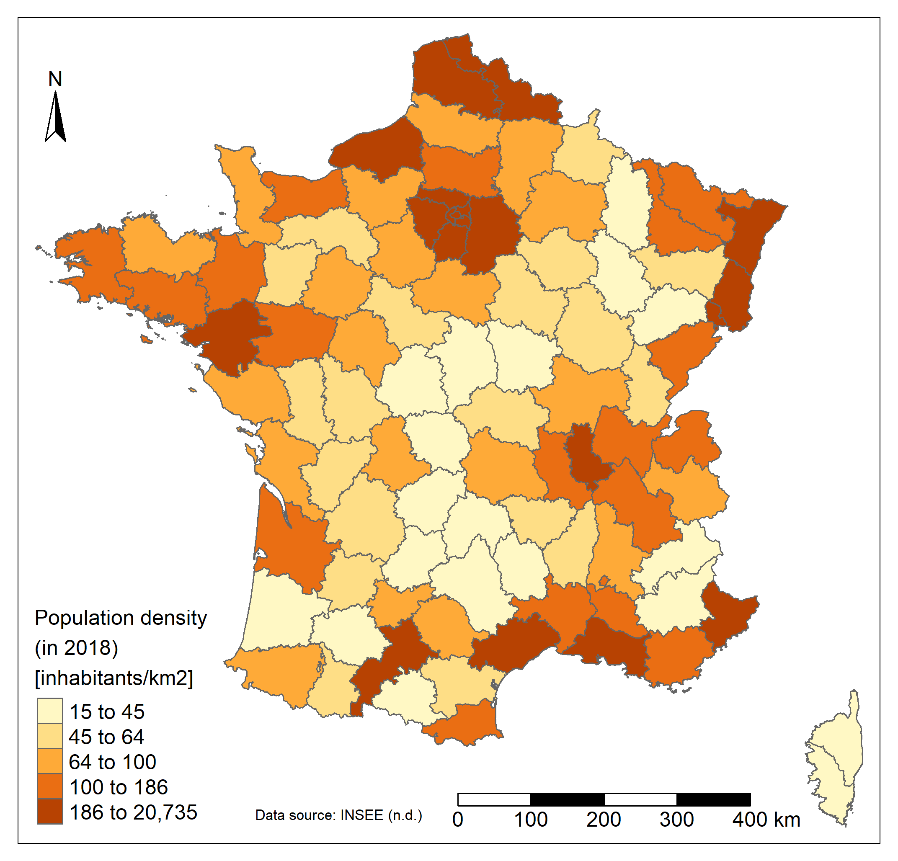
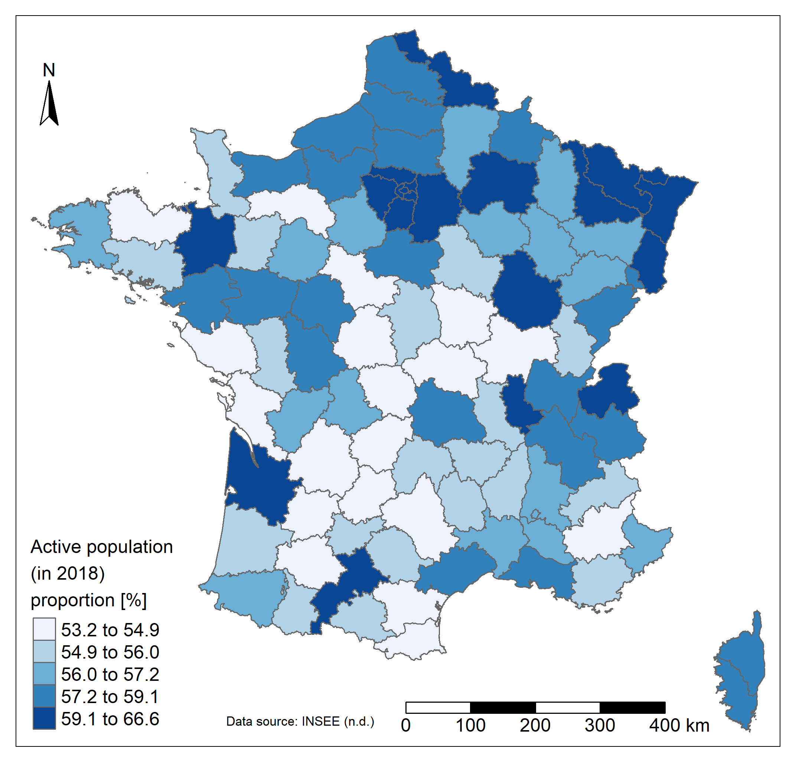

Thematic mapping of France
This project aimed to study the spatial patterns of different types of variables in metropolitan France, to the department level. Economic, demographic and geographic data are analyzed. Correlations between these variables were also sought, on the basis of preliminary hypotheses. This is for the official story... actually it was a way to explore the potential of sf R library to perform common GIS processes (join, merge, aggregate, zonal statistics,...) and tmap package for thematic mapping!
Methodology
Data
Administrative shapefile at the level of departments (polygons vector data) and the French road network (polylines vector data) have been downloaded on the DIVA-GIS (n.d.) website [1]. The road network includes the main roads that are highways, national and departmental roads. In addition, various variables were downloaded on the Institut national de la statistique et des études économiques (INSEE ; n.d.) website [2]:
- At the level of municipalities, the population by sex and age group (10 groups) in 2018.
- At the level of municipalities, the number of unemployed persons in the active population (15-64 years old) in 2018.
- At the level of departments, the average net hourly wage [€/hour] in 2017 (in this project, it is assumed that the values are the same in 2018).
GIS procedure and Cartography
Different interesting variables were calculated from previously downloaded data. Firstly, the total population per municipality was calculated as the sum of population in all sex and age group combinations. Similarly, the total active population was calculated as the sum of population in the 15-64 age group. The unemployment variable was retained as provided by the INSEE. Since these variables were at the municipality level, they have been joined by their unique geographic code (unlike the name of municipalities which is not always unique). Then, they were aggregated into departments. Salary data was also joined to the database at the department level, as well as the associated and unique department names that allowed the join with the department shapefile. The surface of department was also joined. It was calculated on a temporary reprojection of the shapefile into a equal-area projection (conserving the area, unlike the projection used for mapping). Once all the absolute variables at the department level, relative variables were calculated. The population density [inhabitants/km2], the active population proportion [%] and the unemployment proportion [%] were calculated.
After verifying that the administrative and roads shapefiles used the same coordinate system, an empty raster was created from the administrative shapefile and the distance from each cell center to the nearest road was calculated. To reduce the calculation time, the resolution was deliberately chosen coarse. Then, a zonal statistical method was applied to extract the mean value of the nearest road for each department
Therefore, the final variables used for mapping and correlation testing are : population density [inhabitants/km2], active population proportion [%], unemployment proportion [%], mean distance to nearest road [km] and mean net hourly wage [€/hour].
To remain consistent in the representation of spatial patterns, choices regarding the classification were made and applied to all variables. Some data being highly non-normally distributed, the quantile classification for mapping was preferred. Moreover, all maps used a 5-class classification as a compromise between detail and readability.
Statistics
The correlations between the salary and the other variables were also studied, on the basis of preliminary assumptions. Scatterplots of the hourly salary (Y) as a function of the other variables (X) were displayed. Linear regression model lines and their respective r2, when the model was statistically significant (p-value < 0.05), were also calculated. Since the statistical test requires a normal distribution, a distribution verification was performed beforehand. The population density being highly non-normally distributed, its logarithm was used instead. According to the preliminary assumptions, the wage should increase with the population density which is probably a good proxy of cities and job opportunities. The wage might increase with the proportion of active population which could be higher in the cities. Finally, wages are expected to increase with the access to transport and therefore decrease with the mean distance to the nearest main road. So far, these are only simple assumptions (especially between wage and active population proportion; knowing the complex interactions of numerous variables in the real world) and they might not be verified. That's the whole point of statistical testing!
Results and discussion
Spatial patterns
The population is not evenly distributed in France. The vast majority of departments have a population density of less than 200 inhabitants/km2. The few remaining departments present huge densities (>5000 inhabitants/km2), around the capital city. Departments in and around Paris, as well as in the far North, in Alsace, in Bretagne or along the Mediterranean sea are the most densely populated (>200 inhabitants/km2). The center of France and Corsica present really low density values (< 50 inhabitants/km2).
The proportion of the active population varies between 53 and 67 %. The highest values are found in and around Paris, in Alsace and the North region or in more isolated departments such as in Gironde, Haute-Garonne or Ille-et-Vilaine (more than 59%). The center of the country has a lower proportion of active people (around 55%).
Regarding the unemployment, the far South, the North and North-East regions are more affected (up to 8.5% of unemployement). The North-West and the Center-East regions present lower values of unemployment. A strong contrast is also visible in departments around Paris. Unsurprisingly in France the road network is well developed. The distance is lower in the North-West region and higher in the region close to Spain and in the Eastern part of the country even if the highest values found in the country are quite low. The maximum departmental mean distance to a main road (departmental or wider road) is less than 6 kilometers. Unsurprisingly, the lowest values are found close to the capital city, where the road network is highly densified.
Finally, the mean net hourly wage varies between 11 and 23€/hour and seems to be higher in departments containing and around the main cities of the country which are Paris, Marseille, Lyon, Toulouse, Nice, Nantes, Montpellier, Strasbourg and Bordeaux (>14 €/hour). The lowest values are mainly found in the Center of the country. It is already clear that certain spatial patterns of this last map seem to be found in the previous one as well. That's why the next section will be useful and will more reliably confirm whether these links exist or not!
Note that caution should be exercised when analysing spatial patterns because the choice made to map the data can alter these patterns. Different elements are responsible such as the way unit areas were created and the scale at which they are represented (Modifiable areal unit problem - MAUP), the chosen classification method (equal classes, quantile, jenks, logarithm, etc.), the number of classes, the projection, etc.
Correlations
A significant correlation was found between the hourly wage and the logarithm of population density. As expected, the wage increases with population density. Hourly wage variation is explained at 67% by the logarithm of population density. However, the relation seems to be weaker for high values of the density logarithm (and therefore for extremely high values of density). A second significant correlation was found, between the hourly wage and the active population proportion. As expected, the wage increases with the active population proportion. 53% of the hourly wage variation is explained by this variable. The correlation seems to be weaker for high active population proportions.
The correlations between the hourly wage and the unemployment proportion and the mean distance to the nearest road were not significant and therefore are not shown. However, the absence of relation can also be interpreted. Departments where the salary is higher are not less (or more) sensitive to the unemployment. The absence of relation between the wage and the access to the road network might be related to the high development of the country. France is quite rich in general, and the road network is well developed everywhere (the range between the minimum and maximum values is small). As stated earlier, the maximum mean distance to a main road is less than 6 kilometers. There is no real physical limitation to access a job and a higher salary. The correlation could however exist in other, poorer countries, where the network is less developed (assumption to be verified).
Data sources
- [1] DIVA-GIS. (n.d.). Download data by country. https://www.diva-gis.org/gdata.
- [2] Institut national de la statistique et des études économiques (INSEE). (n.d.). Statistiques et études.
https://www.insee.fr/fr/statistiques.
R code
#set directory
setwd("C:/Users/Boris/Documents/thematic_mapping/france")
#required libraries
library(openxlsx)
library(raster)
library(sf)
library(rgdal)
library(tmap)
library(RColorBrewer)
#import and clean of useful databases
#import population data
pop<-openxlsx::read.xlsx("POP_2018.xlsx", 1,startRow = 11)
#calculate total population
pop$pop_totale<-NULL
for (i in 1:nrow(pop)){
pop$pop_totale[i]<-sum(pop[i,3:22])
}
# calculate 18-64 pop
pop$pop_active<-NULL
for (i in 1:nrow(pop)){
pop$pop_active[i]<-sum(pop[i,7:10])+sum(pop[i,17:20])
}
#remove useless columns
pop<-pop[,c(1:2,23:24)]
#import unemployement data
unemployement<-openxlsx::read.xlsx("emploi-pop-active-2018.xlsx", 1,startRow = 6)
unemployement<-unemployement[,c('CODGEO','LIBGEO','P18_CHOM1564')]
#merge databases at municipalities level
data<-merge(pop, unemployement, by='CODGEO')
#aggregation by "departement"
data$code_dep<-stringr::str_sub(as.character(data$CODGEO),1,-4)
data<-aggregate(x=data[,c(3,4,6)],by=list(data$code_dep), FUN='sum')
#import salary data
salary<-openxlsx::read.xlsx("salaire_2017.xlsx", 8,startRow = 6)
salary<-salary[,c(1,3)]
#merge databases at departements level
data2<-merge(data, salary, by.x='Group.1', by.y='CODGEO')
#import of a database linking departements code and their names, useful for the database and spatial layer merging
lien<-openxlsx::read.xlsx("salaire_2017.xlsx", 8,startRow = 6)
lien<-lien[,1:2]
data2<-merge(data2, lien, by.x='Group.1', by.y='CODGEO')
#import departements shapefile
#I used readOGR instead of shapefile function bc it allows to change the encoding, otherwise numerous municipalites name are incorrect due to accents
temp <- readOGR(dsn=paste0(getwd(),'/FRA_adm'), layer="FRA_adm2", use_iconv=TRUE, encoding="UTF-8")
departements<-temp #obliger de faire en deux temps, c'est bizarre mais sinon l'objet semble rester connecter au fichier, et donc le modifie aussi...
#transform as sf object
departements<-sf::st_as_sf(departements)
departements<-departements[,7]
#merge data to the spatial layer
departements<-merge(departements, data2, by.x = 'NAME_2', by.y = 'LIBGEO')
#equal area projection to calculate area
temp_for_area<-st_transform(departements, crs = 2163)
departements$area<-st_area(temp_for_area)
#calculate useful variables
#density of pop
departements$density<-(10^6)*departements$pop_totale/departements$area
#proportion of active pop
departements$prop_active<-round(100*departements$pop_active/departements$pop_totale,digits=1)
#proportion of unemployement
departements$prop_unemployement<-round(100*departements$P18_CHOM1564/departements$pop_totale,digits=1)
#Hourly wage rounding
departements$SNHM17<-round(departements$SNHM17,digits=1)
#mean distance to the nearest national road by departements
#import main national roads shapefile
roads<-shapefile('FRA_rds/FRA_roads.shp')
#create a raster with France extent
france<-shapefile('FRA_adm/FRA_adm2.shp')
ext <- extent(france)
r <- raster(ext, res=0.05)
r[]<-1
#compute distance to the nearest national road
p = as(r,"SpatialPoints")
distance = rgeos::gDistance(p, roads, byid=TRUE) #saveRDS(distance, file = 'distance_sauv') distance<-readRDS('distance_sauv')
dmin = apply(distance,2,min)
r[]=dmin
#mask raster with France
r<-mask(r,france)
#in km
r[]<-100*r[]
#show the resulting raster
plot(r, xlim=c(0,5),ylim=c(42,44))
plot(roads,add=T)
#zonal statistic to calculate mean distance by departements
dist <- extract(r, departements)
for (i in 1:nrow(departements)){
departements$dist[i]<-mean(na.omit(dist[[i]]))
}
departements$dist<-round(departements$dist,digits=1)
#color pallet for mapping
display.brewer.all()
#thematic mapping using tmap
#pop density
a<-tm_shape(departements) +
tm_polygons(col = "density",title = 'Population density \n(in 2018) \n[inhabitants/km2]' , style = "quantile")+
tm_layout(
legend.title.size=1.2,
legend.text.size = 1,
legend.position = c("left","bottom"),
legend.bg.color = "white",
legend.bg.alpha = 0,
legend.format = list(text.separator='to'))+
tm_scale_bar(position = c(0.5,0.0),width = 0.3,text.size = 1)+
tm_compass(text.size = 1,position = c(0,0.85))+
tm_credits("Data source: INSEE (n.d.)",
size = 0.7,
position = c(0.27, 0.02))
tmap_save(a,'density.png')
#active pop proportion
a<-tm_shape(departements) +
tm_polygons(col = "prop_active",title = 'Active population \n(in 2018) \nproportion [%]' , style = "quantile", palette=brewer.pal(n = 7, name = "Blues"))+
tm_layout(
legend.title.size=1.2,
legend.text.size = 1,
legend.position = c("left","bottom"),
legend.bg.color = "white",
legend.bg.alpha = 0,
legend.format = list(text.separator='to'))+
tm_scale_bar(position = c(0.5,0.0),width = 0.3,text.size = 1)+
tm_compass(text.size = 1,position = c(0,0.85))+
tm_credits("Data source: INSEE (n.d.)",
size = 0.7,
position = c(0.27, 0.02))
tmap_save(a,'prop_active.png')
#unemployement rate
a<-tm_shape(departements) +
tm_polygons(col = "prop_unemployement",title = 'Unemployment \n(in 2018) \nproportion [%]' , style = "quantile", palette=brewer.pal(n = 7, name = "Oranges"))+
tm_layout(
legend.title.size=1.2,
legend.text.size = 1,
legend.position = c("left","bottom"),
legend.bg.color = "white",
legend.bg.alpha = 0,
legend.format = list(text.separator='to'))+
tm_scale_bar(position = c(0.5,0.0),width = 0.3,text.size = 1)+
tm_compass(text.size = 1,position = c(0,0.85))+
tm_credits("Data source: INSEE (n.d.)",
size = 0.7,
position = c(0.27, 0.02))
tmap_save(a,'prop_unemployement.png')
#Hourly wage
a<-tm_shape(departements) +
tm_polygons(col = "SNHM17",title = 'Hourly wage \n(in 2017) \n[€/hour]' , style = "quantile", palette=brewer.pal(n = 7, name = "Purples"))+
tm_layout(
legend.title.size=1.2,
legend.text.size = 1,
legend.position = c("left","bottom"),
legend.bg.color = "white",
legend.bg.alpha = 0,
legend.format = list(text.separator='to'))+
tm_scale_bar(position = c(0.5,0.0),width = 0.3,text.size = 1)+
tm_compass(text.size = 1,position = c(0,0.85))+
tm_credits("Data source: INSEE (n.d.)",
size = 0.7,
position = c(0.27, 0.02))
tmap_save(a,'hourly_wage.png')
#create zoom frame
zoom<-extent(4, 9, 42.2, 44)
p_zoom <- as(zoom, 'SpatialPolygons')
#use same coordinates
crs(p_zoom) <- crs(france)
#distance to nearest (main) road
a<-tm_shape(r) +
tm_raster(title = 'Distance to \nnearest main \nroad [km]' , style = "quantile")+
tm_scale_bar(position = c(0.5,0.0),width = 0.3,text.size = 1)+
tm_compass(text.size = 1,position = c(0,0.85))+
tm_layout(
legend.title.size=1.5,
legend.text.size = 1.2,
legend.position = c("left","bottom"),
legend.bg.color = "white",
legend.bg.alpha = 0,
legend.format = list(text.separator='to'))+
tm_shape(roads)+
tm_lines(size = 0.25, col='black')+
tm_shape(p_zoom)+
tm_borders(lwd=2,lty = 'solid',alpha = NA, col = 'black')
tmap_save(a,'Distance.png')
#distance to nearest (main) road (zoom)
a<-tm_shape(r, bbox = p_zoom) +
tm_raster(title = 'Distance to \nnearest main road \n[km]' , style = "quantile")+
tm_scale_bar(position = c(0.55,0.0),width = 0.3,text.size = 1)+
tm_compass(text.size = 1,position = c(0,0.85))+
tm_layout(
legend.title.size=1.5,
legend.text.size = 1.2,
legend.position = c("left","bottom"),
legend.bg.color = "lightgrey",
legend.bg.alpha = 1,
legend.format = list(text.separator='to'))+
tm_shape(roads)+
tm_lines(size = 0.25, col='black')
tmap_save(a,'Distance_zoom.png')
#Mean distance to nearest (main) road
a<-tm_shape(departements) +
tm_polygons(col = "dist",title = 'Mean distance to \nnearest main road \n[km]' , style = "quantile", palette=brewer.pal(n = 9, name = "Blues")[3:7],
colorNA = "white", # color of missing data
textNA = "No Data")+
tm_layout(
legend.title.size=1.5,
legend.text.size = 1.2,
legend.position = c("left","bottom"),
legend.bg.color = "white",
legend.bg.alpha = 0,
legend.format = list(text.separator='to'))+
tm_scale_bar(position = c(0.5,0.0),width = 0.3,text.size = 1)+
tm_compass(text.size = 1,position = c(0,0.85))
tmap_save(a,'dist.png')
#stats
#is there a correlation between Salary and other variables?
#with active population
#distribution
hist(departements$SNHM17,breaks=20)
hist(departements$prop_active,breaks=20)
#scatterplot
plot(departements$prop_active,departements$SNHM17, xlab='Active population proportion [%]', ylab='Hourly wage [€/hour]', pch=19)
#correlation
cor(departements$prop_active, departements$SNHM17, method = "pearson")
#linear regression
regression<-lm(departements$SNHM17 ~ departements$prop_active)
abline(regression)
summary(regression)
text(min(departements$prop_active),22, bquote(~ r^2 == .(round(summary(regression)$r.squared,digits = 2))), pos = 4, cex=2)
#with population density
#distribution
hist(departements$density,breaks=20)#highly non normally distributed -> use of logarithm
log_density<-as.vector(log(departements$density))
hist(log_density,breaks=20)
#scatterplot
plot(log_density,departements$SNHM17, xlab='Logarithm of population density ', ylab='Hourly wage [€/hour]', pch=19)
#correlation
cor(log_density, departements$SNHM17, method = "pearson")
#linear regression
regression<-lm(departements$SNHM17 ~ log_density)
summary(regression)
abline(regression)
text(min(log_density),21, bquote(~ r^2 == .(round(summary(regression)$r.squared,digits = 2))), pos = 4, cex=2)